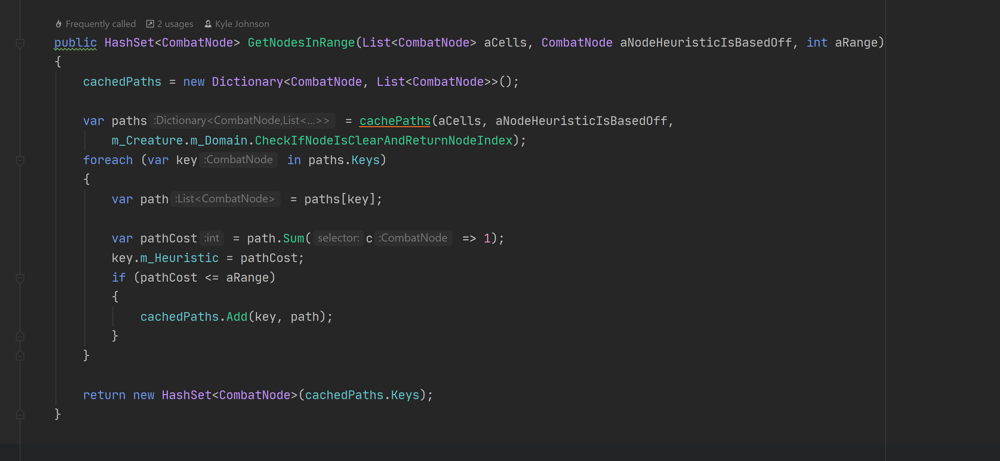
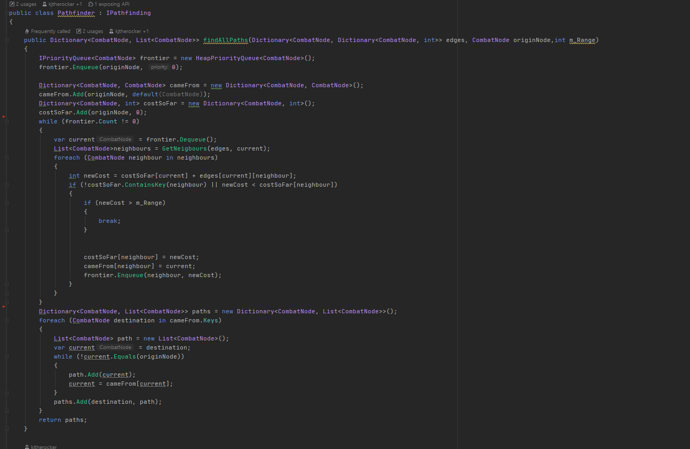
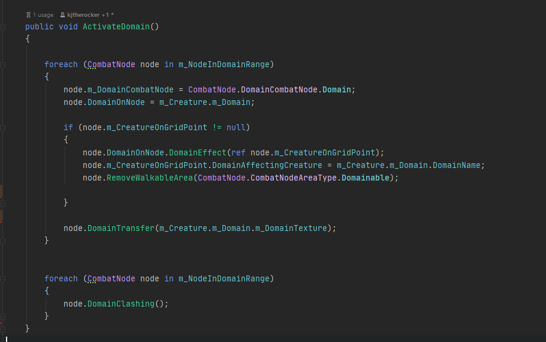

Git Repo is now public.
Domain is the ability to turn the terrain around you into different terrain. To start I use A* pathfinding to find all the nodes around you that are both walkable and do not currently have a domain on them.
Once I get the list of avaliable nodes that can be activated, Once, I get the list of avaliable nodes that can be activated I loop through them all and by using the character's reference to his Domain class I get the correct texture,name and Domain Effect. I tell each of the nodes then to communicate with the shader to dissolve into the new texture.
Domain Example
  
Memoria
Another unique point for the game is the Memoria system. When a enemy dies they leave behind their memorys and skills signified by a floating blue soul called Memoria. When a character walks ontop of the Memoria they will get a choice out of 3 skills the enemy had to be used in battle.